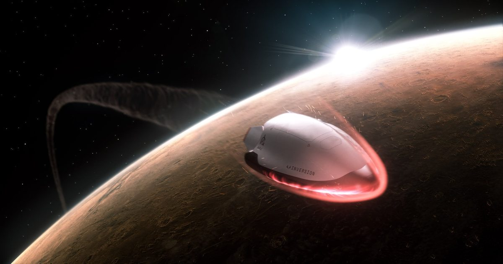

Как Inversion и NASA планируют разблокировать изменения межпланетного аэрозахвата MB
Использование атмосферы планеты для обеспечения места спутника на орбите, процесс, известный как «аэрозахват», был мечтой бортинженеров на протяжении десятилетий.
Единственная проблема?
Это действительно трудно сделать.
Для этого требуются системы управления, тепловое управление и орбитальная механика, чтобы все координировались в танце, что позволяет космическому кораблю не просто замедляться при прохождении мимо другой планеты (или Луны в некоторых случаях), но и начинать вращаться вокруг нее без использования